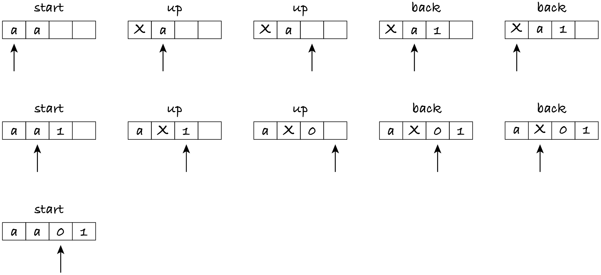

27.2. The Church–Turing thesis
In this section, I discuss the importance of Turing machines.
27.2.1. Computational models
While a programming language like Python eases the implementation of algorithms, it’s not a good medium to define what algorithm and complexity mean. A programming language simply has too many constructs, making definitions more complicated. For example, we had to define ‘input size’ for each data type: for integers, it’s the number of digits; for sequences and sets, it’s the number of elements; for graphs, it’s the number of nodes and edges. We also had to make assumptions about the complexity of each operation, like numeric operations on 64-bit numbers taking constant time, in order to analyse the complexity of an algorithm.
In contrast, a Turing machine is so simple that it became the main computational model, on which all concepts are based. A Turing machine defines precisely the concepts of input, output, algorithm (the transition table) and executing an algorithm (what a computational step is and when to stop). This in turn allows derived concepts to also be precisely defined:
An algorithm is correct, i.e. solves a given problem, if it stops, for every input that satisfies the preconditions, with an output that satisfies the postconditions.
A problem is computable if there’s an algorithm that solves it.
The size of the input is the number of symbols until the start of the infinite sequence of blanks.
The run-time of an algorithm on a given input is the number of steps executed until it stops.
The complexity of an algorithm is the growth rate of the number of steps in terms of the number of input symbols.
In summary, the formal definition of algorithm is what can be written as a transition table for a Turing machine, and all other definitions (computability, complexity, classes P and NP, etc.) are based on it.
Note: Turing machines are a formal model of computation: they enable a precise definition of algorithm, complexity and computability.
You may be wondering if basing the notion of computation on such simple conceptual devices is too restrictive. Is the Turing machine a good model of what modern computers do? Can they compute things the Turing machine can’t?
27.2.2. Universal models
In the 1936 paper where Turing introduces his conceptual machine, he provides an argument (not a proof!) for why such a machine can mimic what computers can do. In those days, before electronic computers existed, the word ‘computer’ still meant ‘a human who does mathematical calculations’.
Turing’s argument was in essence as follows. When solving a mathematical problem, humans read and write symbols on sheets of paper and they have a mental state of what to do next. For example, when adding two numbers, they look at each digit, mentally carrying over if necessary, and write the result one digit at a time. Humans can only process a finite number of symbols and can only remember a finite number of things. They can use more sheets of paper as necessary. While the two-dimensional nature of paper sheets is convenient to put symbols above or under each other, it’s not really essential to the computation itself. For example, the addition of two numbers can also be carried out horizontally.
Therefore, a machine that has an infinite tape, a head that moves back and forth to read and write symbols, and a finite number of states, should be able to compute anything a human (and, nowadays, electronic computers) can. This is known as the Church–Turing thesis: anything that can be computed, can be computed by a Turing machine. The statement is a hypothesis, not a theorem, because it can’t be proven: it states that whatever people would informally agree to call an algorithm can be written as a transition table for the Turing machine.
Earlier, mathematician Alonzo Church defined the lambda calculus, a computational model based on functions. It has been proven that the lambda calculus and Turing machines are equivalent, in the sense that what can be computed with one can be computed with the other. Several variants of Turing machines were also proven to be equivalent. For example, a Turing machine with multiple tapes, each with one head that can move independently of the other heads, can be simulated with a single-tape machine. No computational model has yet been invented that can solve more problems than Turing machines, and this gives further credibility to the Church–Turing thesis.
A modern computer, with multiple CPU cores, gigabytes of RAM and a large disk, cannot solve any problem the humble Turing machine can’t. Very roughly, the reason is as follows.
Any program (in Python, Java, etc.) is translated to machine code, so that the CPU can execute it. Machine code provides a limited number of simple instructions: increment the value in a register, add the values in two registers, fetch a value from a RAM address and put it in a register, etc. If we store the binary content of each memory (register, cache, RAM, disk) in a separate tape with symbols 0 and 1, then each machine code instruction can be implemented with a transition table that moves the heads of the affected tapes. The transition tables are quite large: you’ve seen how many entries were needed for a simple problem like checking a string is a valid password. However, the point is that a Turing machine that simulates the execution of CPU instructions can be written.
Info: How computers process instructions is explained in TM112 Block 1 Part 3.
Since multi-tape machines are equivalent in computational power to single-tape machines, it follows that any algorithm written in Python (or any other language) and executed by a modern computer can be written as a transition table and executed by a Turing machine.
If any computable problem can be solved with a Turing machine, it means that it can be solved with a Python function that takes a single input of type list and has only two variables: a string with the current state and an integer with the index of the list element currently processed. The reason why two variables suffice to write any algorithm is that we can encode additional variables as states or in the list.
When solving the parity bit problem, we used additional states. Instead of having two Boolean variables that remember whether a letter or a digit occurred, we represented their four possible values with four states: ‘start’ (no letter or digit seen), ‘letter’, ‘digit’ and ‘both’.
Now let’s see an example of storing the additional variables in the tape rather than as additional states.
27.2.3. Length of string
The problem to be solved is to compute the length of a string:
Given a tape with zero or more letters ‘a’, add 0s and 1s at the end so that they represent, in reverse binary form, the number of letters. When the machine stops, the head is over the left-most digit. For example, if the input is (‘a’, ‘a’), the output is (0, 1) because the number of letters (namely, two) is 10 in binary. The input should be preserved, i.e. it should not be overwritten by other symbols.
Having the binary digits in reverse order allows us to grow the number to the right as we count letters, without overwriting the string.
To solve this problem, when reading an ‘a’, we must move the head right, increment the binary number and return the head to where it was, so that we can read the next ‘a’ without inadvertently skipping any letters.
We thus need to mark the position of the last ‘a’ counted, so that the head can return to that position. The best way to do that is to introduce a new symbol that marks the position. I will use ‘X’ as the symbol (because X marks the spot), but any symbol different from ‘a’, blank, 0 and 1 will do.
We need two states besides ‘start’. One state is to increment the counter, let’s call it ‘up’; the other is to return to the last ‘a’ read, let’s call it ‘back’.
In the ‘up’ state, the head moves right skipping all letters. If it finds a 0 or blank, it writes 1 (one more letter was read) and starts moving back. If it finds a 1, it writes 0 and moves right, staying in the ‘up’ state to carry over the bit and increment the rest of the binary number.
In the ‘back’ state, the head moves left, skipping all symbols until it reads ‘X’. At that point, the ‘X’ is replaced by ‘a’ (to not change the input), the head moves right and we return to state ‘start’, because we’re now going to repeat the same process to count the next letter.
The next figure shows the configurations, i.e. state, tape and head position, the machine goes through to process input (‘a’, ‘a’). The first and second rows of the diagram show, from left to right, the five configurations to count each ‘a’. The third row shows the final configuration: the machine is again in the ‘start’ state and the head is over a digit. This means all letters were processed and the machine stops.
Here’s the transition table.
[1]:
%run -i ../m269_tm
LENGTH_IN = {"a"}
LENGTH_OUT = {0, 1}
length = {
# (state, symbol): (symbol, head, state)
# if 'a', mark the position and start incrementing counter
('start', 'a'): ('X', RIGHT, 'up'),
# if empty string, write 0 and stop
('start', None): (0, STAY, 'start'),
# before incrementing, skip all letters
('up', 'a'): ('a', RIGHT, 'up'),
# if bit is zero: increment and return to marked position
('up', 0): (1, LEFT, 'back'),
# if bit is one, carry over: keep incrementing
('up', 1): (0, RIGHT, 'up'),
# end of binary number: increment and go back
('up', None): (1, LEFT, 'back'),
# to return to marked position, skip all digits and letters
('back', 0): (0, LEFT, 'back'),
('back', 1): (1, LEFT, 'back'),
('back', 'a'): ('a', LEFT, 'back'),
# restore marked position to 'a'; start again with next letter
('back', 'X'): ('a', RIGHT, 'start')
}
check_tm(length, LENGTH_IN, LENGTH_OUT)
length_tests = [
# case, input, debug, output
('empty', [], False, [0]),
('one', ['a'], False, [1]),
('two', ['a', 'a'], False, [0, 1]),
('three', ['a', 'a', 'a'], False, [1, 1]),
]
check_tm_tests(length_tests, LENGTH_IN, LENGTH_OUT)
test_tm(length, length_tests)
OK: the transition table passed the automatic checks
OK: the test table passed the automatic checks.
Tests finished: 4 passed (100%), 0 failed.
Don’t forget to replace False with True if you want to see the steps for any of the tests.
In summary, although Turing machines are very constrained, we can write any Python function as a (possibly very complicated) transition table, by representing variables as part of the states or part of the tape’s content.
Exercise 27.2.1
If the input symbols were all the 26 lowercase and 26 uppercase letters, instead of just ‘a’, what changes would you make to the transition table? For this exercise you don’t have to preserve the input: you can overwrite it with marker symbols.
Exercise 27.2.2
Do again the previous exercise, but this time preserving the input.